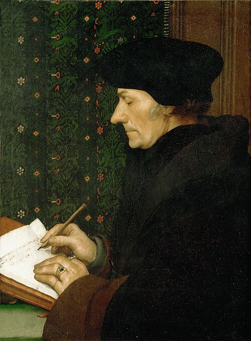
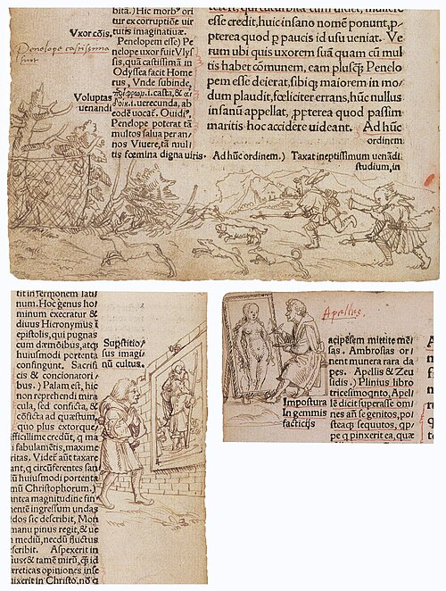
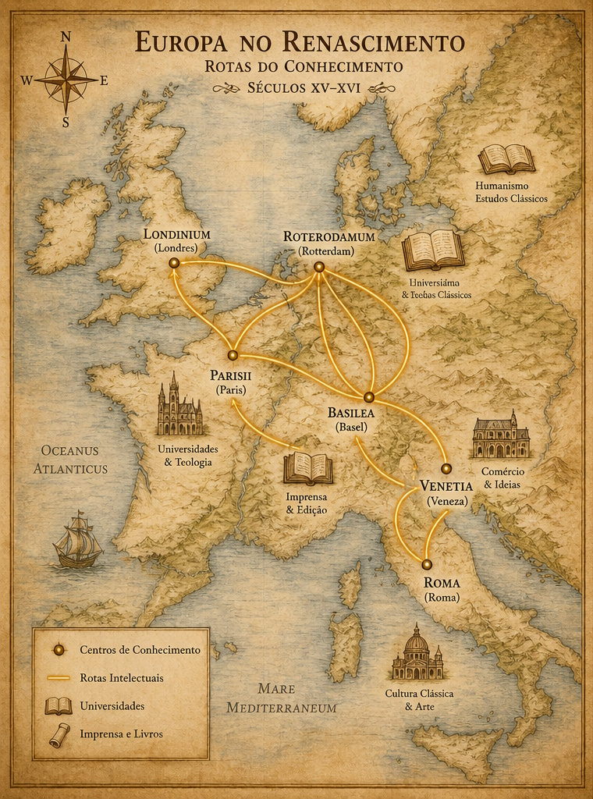

Quem foi Erasmo de Rotterdam?

Filho ilegítimo de um sacerdote, Erasmo cresceu em meio à pobreza e ao rigor monástico — mas jamais aceitou passivamente os limites que a época lhe impunha. Tornou-se o erudito mais lido da Europa do século XVI, escreveu todas as suas obras em latim e manteve correspondência ativa com mais de 500 intelectuais, reis e papas. Sua arma favorita era a ironia; seu alvo predileto, a hipocrisia — religiosa, política ou intelectual.
"A verdadeira sabedoria consiste em conhecer-se a si mesmo."
— Erasmo de Rotterdam
Uma vida em movimento
Erasmo nunca parou quieto. Percorreu a Europa como poucos intelectuais de sua época, acumulando experiências que moldaram seu pensamento humanista.
Os pilares do pensamento erasmiano
Retomando Sócrates e Aristóteles, Erasmo propõe o conhecimento de si como fundamento de toda sabedoria. A cegueira mais perigosa é a mental.
Filologia e teologia unidas: ler a Bíblia e os Padres da Igreja nos textos originais gregos e latinos, sem intermediários distorcidos.
Erasmo condenou todas as guerras de religião. Numa Europa rasgada pelo conflito, defendia a reforma pela razão, jamais pela violência.
O riso como instrumento filosófico: no Elogio da Loucura, a loucura personificada desnuda a hipocrisia de papas, reis e eruditos.
Fé e razão não se excluem. Erasmo buscava uma espiritualidade autêntica, depurada de ritualismos e escolástica vazia.
O bom governante deve ser guiado pela moral cristã, não pelo poder bruto. Resposta humanista à frieza de Maquiavel.
Uma biblioteca para reformar o mundo
Erasmo escreveu em latim — o idioma universal dos eruditos — para ser lido por toda a Europa. Suas obras foram best-sellers do século XVI, reimpressas dezenas de vezes.
Coletânea de provérbios greco-latinos com comentários filosóficos. Mais de 4.000 adágios no total. Catapultou sua fama europeia.
"Manual do Cavaleiro Cristão" — guia espiritual para a vida cotidiana, defendendo fé interior em vez de ritualismo exterior.
Sátira magistral da hipocrisia humana. Uma das obras mais influentes da literatura ocidental. Escrita em 7 dias; lida por séculos.
Primeira edição crítica do Novo Testamento em grego. Revolucionou a teologia e abriu caminho para as reformas protestantes.
"Educação do Príncipe Cristão" — dedicado ao futuro Carlos V. Define o governante ideal como servo da moral evangélica.
Debate com Lutero sobre o livre-arbítrio. Erasmo defende que o homem tem algum papel na salvação — contra a predestinação absoluta.
Elogio da Loucura (Moriae Encomium, 1511)

A sabedoria que se disfarça de loucura
Escrito em sete dias durante uma viagem da Itália à Inglaterra, o Elogio da Loucura é narrado pela própria Loucura — que sobe ao púlpito e discursa em seu próprio favor. Com ironia cortante, ela revela que papas, reis, teólogos e filósofos são todos, a seu modo, loucos. Mas há uma inversão: a loucura que age por amor, que persiste sem garantias, que cuida sem certeza do resultado — essa é a forma mais lúcida de sabedoria.
A obra foi dedicada ao amigo Tomás Moro e tornou-se um dos textos mais lidos do século XVI, reimpresso dezenas de vezes em vida do autor.
No telemonitoramento de feridas crônicas, há uma "loucura" que o Elogio reconheceria como sabedoria: o paciente que retorna semana após semana ao curativo sem ver melhora imediata; o profissional que não desiste diante da ferida que não fecha; a equipe que insiste num protocolo rigoroso mesmo quando os resultados demoram.
Erasmo diria que essa persistência aparentemente irracional — cuidar sem garantia, monitorar sem certeza — é precisamente o oposto da loucura. É o cuidado em sua forma mais inteligente: paciente, metódico e humano.
Por que Erasmo ainda importa?
🔗 Ponte entre mundos
Contemporâneo de Maquiavel e Lutero, Erasmo recusou o cinismo político do primeiro e o radicalismo do segundo. Propôs uma terceira via: reforma gradual, pacífica e racional.
Essa postura moderada é hoje um raro antídoto para tempos de polarização extrema.
🧠 Autoconhecimento como prática
Seu apelo ao autoconhecimento antecipa disciplinas modernas como a psicologia, a inteligência emocional e o mindfulness. Conhecer padrões de comportamento e emoções é a base de decisões mais conscientes.
A frase "a verdadeira cegueira é mental" ressoa com força na era das redes sociais e das distrações digitais.
🌍 Humanismo Europeu
O programa Erasmus de intercâmbio universitário foi batizado em sua homenagem — símbolo vivo de seu ideal: uma Europa unida pelo conhecimento, pela tolerância e pelo diálogo.
📚 Crítica como método
Erasmo mostrou que questionar as instituições — com rigor, evidência e humor — é um ato de profundo amor intelectual. A crítica não destrói; renova.
Seu legado é um convite permanente à honestidade intelectual.
O mundo de Erasmo

Do autoconhecimento filosófico ao cuidado da ferida
Erasmo não escreveu sobre enfermagem nem sobre úlceras. Mas sua ideia central — a de que nada muda sem que o sujeito se conheça primeiro — ressoa de forma direta no maior desafio do telemonitoramento de feridas crônicas: a adesão do paciente ao próprio tratamento.
Teste seus conhecimentos
Perguntas de múltipla escolha — nível misto (básico e intermediário). Clique na alternativa e confirme sua resposta.
Em que cidade Erasmo de Rotterdam nasceu?
Qual é a obra mais famosa de Erasmo, escrita em apenas sete dias durante uma viagem da Itália à Inglaterra?
Erasmo defendia que a verdadeira sabedoria consiste em conhecer-se a si mesmo. No contexto do telemonitoramento de feridas crônicas, essa ideia se aplica melhor a:
Erasmo recusou-se a aderir à Reforma Protestante de Lutero, mesmo compartilhando críticas à Igreja. Qual postura filosófica isso revela?
Qual característica do pensamento de Erasmo o aproxima da noção moderna de inteligência emocional?
Questionamentos no estilo socrático
Não há respostas certas aqui. São perguntas para incomodar — no bom sentido.
Erasmo dizia que a cegueira mais perigosa é a mental. Você consegue identificar um momento em que não percebeu algo importante sobre si mesmo ou sobre um paciente — não por falta de dados, mas por falta de atenção ao que já estava visível?
Pense nos registros do telemonitoramento: eles revelam ou ocultam? O que o profissional deixa de perguntar? O que o paciente deixa de contar — e por quê?
Se o autoconhecimento é a base da sabedoria, como um sistema de telemonitoramento pode ser desenhado para ajudar o paciente a se conhecer — e não apenas para fornecer dados ao profissional?
Há diferença entre monitorar uma ferida e ajudar o paciente a compreender a própria ferida. Qual dessas coisas o seu protocolo atual faz?
Erasmo criticava as práticas religiosas vazias — rituais sem compreensão, formas sem conteúdo. Existe algum protocolo de cuidado de feridas que você conhece que funciona assim: executado corretamente na forma, mas sem que o paciente entenda o porquê?
Se o paciente não entende o motivo do curativo, ele o fará quando o profissional não estiver por perto?
Erasmo propunha uma "terceira via" entre dois extremos: nem a rigidez de Roma, nem o radicalismo de Lutero. No cuidado de feridas crônicas, quais são os extremos que você identifica — e onde estaria essa terceira via?
Pense, por exemplo, entre controle total do profissional vs. autonomia total do paciente; entre tecnologia como solução e tecnologia como distância.
O programa universitário Erasmus leva seu nome porque ele acreditava que o conhecimento cresce no encontro entre culturas e perspectivas diferentes. O telemonitoramento une paciente, tecnologia e profissional de saúde em um triângulo de vozes. Qual dessas vozes costuma ser menos ouvida — e o que se perde quando ela fica em silêncio?
Erasmo escrevia cartas para 500 interlocutores. O diálogo era sua metodologia. O que seria o equivalente disso num protocolo de telemonitoramento humanizado?